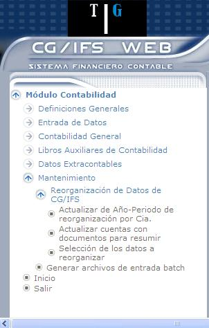

Reorganización de Datos de CG/IFS
La reorganización de datos de CG/Web únicamente puede ejecutarla el usuario CGIFS. El proceso de Reorganización de datos de CG/Web es un paso muy útil, con él se consigue lo siguiente:
ACTUALIZACIÓN:
de datos de CG/Web es una herramienta que tiene como objetivo lo siguiente:
- Eliminar todos aquellos comprobantes de Año-Periodo menor o igual al Año-Periodo hasta el que se reorganiza para las Compañías indicadas.
- Eliminar saldos históricos, es decir, aquellos correspondientes a movimientos de Periodos reorganizados, para las Compañías indicadas.
- Eliminar todos los saldos extracontables hasta el mismo Año-Periodo en que se reorganizan saldos históricos. Si se desea eliminar un único Tipo de extracontable o un intervalo determinado se debe utilizar la opción ‘Borrar datos Extracontables’ del Menú de datos Extracontables.
- Suprimir todos los datos de una Compañía. Para ello se requiere que esté inactiva.
- Eliminar todos los registros inactivos cuya existencia no sea requerida. Así por ejemplo, una Cuenta de Mayor será eliminada en el caso de que su saldo sea cero y en el caso de tener los movimientos contables eliminados.
RAPIDEZ
Este procedimiento concentra todos los registros válidos en forma ordenada y continua de forma que el acceso a cualquier información se vuelve más ágil y rápido.
CAPACIDAD
Al eliminar registros, concentrar y ordenar los que quedan, indudablemente se recupera espacio en el disco.
Consecuencias de
Antes de reorganizar y de acuerdo con el listado de situación de las Compañías que se han seleccionado, se debe tener en Cuenta que el proceso va a producir los siguientes resultados:
Reorganización de movimientos contables
- Son eliminados todos los Comprobantes con estado Rechazado de todos los Periodos.
- Son eliminadas todas las cabeceras de Comprobantes contabilizados correspondientes a Periodos cerrados hasta el Año-Periodo que se indique (inclusive).
Durante de movimientos contables se distinguen tres casos básicos:
- Cuentas de Mayor sin Auxiliar
Se eliminan los movimientos de los Periodos a reorganizar y se crea un movimiento resumen, en el último Periodo reorganizado, para cada Cuenta de Mayor cuyo saldo en moneda local, en moneda extranjera o en tercer importe sea distinto de cero.
- Cuentas de Mayor con Auxiliar sin documento
Se procede de forma idéntica al caso anterior pero se crea un registro resumen para cada combinación Cuenta de Mayor-Cuenta de Auxiliar.
Si de Mayor trabaja con más de un Tipo de Auxiliar, se crea un movimiento resumen para cada combinación Cuenta de Mayor-Cuentas de Auxiliar.
- Cuentas de Mayor con Auxiliar y con documento
Su tratamiento puede realizarse de dos formas diferentes según se desee o no resumir los movimientos de documentos que no estén cancelados. Para indicar que se resuman se deben detallar las Cuentas de Mayor a las que pertenecen estos documentos mediante la opción: Reorganización de datos/ Actualizar Cuentas con documentos para resumir.
Si no se indican Cuentas con documento para Resumir:
Se eliminan los movimientos correspondientes a documentos cancelados hasta el Periodo indicado. En las Cuentas de Mayor con documento que además trabajan con segundo y/o tercer Auxiliar, si los documentos están cancelados en primer Auxiliar pero no en alguno de los otros dos Auxiliares se procede de la siguiente forma:
- Se eliminan los movimientos correspondientes a documentos cancelados a nivel de primer Auxiliar antes del primer Periodo que queda vigente.
- Se crean movimientos resumen para las combinaciones de Auxiliares no canceladas con número de documento <-0000000.
Los documentos no cancelados a nivel de primer Auxiliar quedan vigentes aunque sean de Periodos reorganizados, formando parte de su Comprobante original pero sin el encabezado.
Si se indican Cuentas con documento para Resumir:
Se eliminan los movimientos correspondientes a las Cuentas indicadas de documentos no cancelados, creando un documento resumen para cada combinación Cuenta Mayor-Auxiliar 1º-Auxiliar 2º-Auxiliar 3º.
Los movimientos resumen quedan formando parte de un Comprobante de número 98763 y de Tipo de Comprobante 01, que se crea automáticamente sin encabezado. Estos movimientos se incorporan al último Periodo reorganizado.
Reorganización de saldos históricos
Son eliminados todos los saldos históricos hasta el Periodo que se seleccione (inclusive) y cuyos movimientos ya están reorganizados. Se crea un saldo inicial al Debe o al Haber en el último Periodo a reorganizar, que corresponde a la suma de su importe más los importes de los Periodos anteriores.
Reorganización de datos extracontables
Son eliminados los importes introducidos sobre todos los Tipos de datos extracontables hasta el Año-Periodo seleccionado para reorganizar saldos históricos.
Eliminar Todo
Son eliminados todos los movimientos y saldos contables y extracontables de las Compañías en las que se selecciona esta opción, así como el código de Compañía.
Reorganización de Cuentas de Mayor
- Son eliminadas las Cuentas de Detalle con estado Inactivo que no tengan movimientos contables ni saldos, tanto contables como extracontables.
- Son eliminadas las Cuentas de Título que tengan estado Inactivo y en queden sin ninguna Cuenta de Detalle dependiendo de ellas.
- Son eliminadas de las Estructuras todas las Cuentas de Mayor previamente eliminadas al ejecutar de Cuentas de Mayor. Si una línea de descripción queda sin Cuentas de Mayor asociadas también será eliminada de la estructura.
Reorganización de Cuentas de Auxiliar
Son eliminadas las que tienen estado Inactivo y no tienen ningún movimiento contable ni saldos, tanto contables como extracontables. Al eliminar una Cuenta de Auxiliar se elimina también su dirección y memos.
Asimismo, se eliminan los grupos de Cuentas de Auxiliar que tengan estado Inactivo y ya no son usados por ninguna Cuenta de Auxiliar.
Reorganización de Tipos de Auxiliar
Son eliminados los Tipos de Auxiliar que tengan estado Inactivo, siempre que no tengan Cuentas de Auxiliar y no usen ninguna Cuenta de Mayor, ni figure en ningún grupo de Cuentas de Auxiliar.
Reorganización de Compañías
Son eliminadas del archivo las Compañías con estado Inactivo, que no tengan ningún Comprobante ni movimiento contable y que no tengan ningún saldo, tanto contable como extracontable.
Reorganización de Grupos de Compañías
Son eliminados del archivo los grupos de Compañías que tengan estado Inactivo.
Reorganización de Planes de Cuentas
Son eliminados del archivo los Planes de Cuentas con estado de Inactivo, si no es usado por ninguna Compañía y no tiene definida ninguna Cuenta de Mayor.
Reorganización de Usuarios de CG/Web
Son eliminados todos los perfiles de Usuario con estado Inactivo y que no sean CGIFS o CGAUDIT. Al desaparecer un usuario todos los elementos de su propiedad pasan a ser propiedad del usuario CGIFS.
Reorganización de Líneas de Estructuras
de líneas de estructuras se ejecuta automáticamente cada vez que se ejecuta de Cuentas de Mayor. Una vez terminada de Cuentas de Mayor, el programa correspondiente se encarga de lo siguiente:
- Elimina de las estructuras definidas todas las Cuentas de Mayor inexistentes en el maestro de Cuentas de Mayor.
- Elimina todas las líneas de descripción que queden sin ninguna Cuenta de Mayor asociada.
En caso de existir alguna referencia definida conteniendo únicamente Cuentas de Mayor reorganizadas, dicha referencia será también eliminada.
Menú de Reorganización de Datos de CG/Web
Las opciones disponibles se presentan en la pantalla que muestra 1.2.

Figura 1. Menú – Reorganización de Datos.
Cada opción se describe brevemente a continuación:
Actualizar de Año – Periodo de Reorganización por Cia.
Mediante esta opción se indica de forma individual para cada Compañía hasta qué Periodo se desean reorganizar movimientos, saldos contables y/o extracontables o bien si se quiere suprimir todos los datos de una Compañía.
Actualizar Cuentas con documentos para resumir
Permite introducir Cuentas que trabajan con documentos de las que se desean eliminar sus movimientos aunque los documentos no estén cancelados, resumiéndolos en un documento definido por el usuario.
Selección de los datos a reorganizar
Permite seleccionar los datos que se desean reorganizar (movimientos contables, Cuentas de Mayor, Cuentas de Auxiliar, etc.)
Created with the Personal Edition of HelpNDoc: Free Qt Help documentation generator